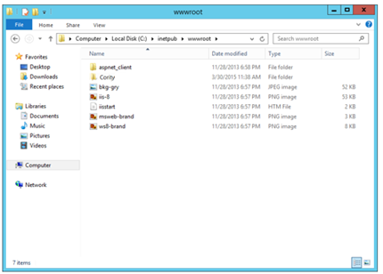
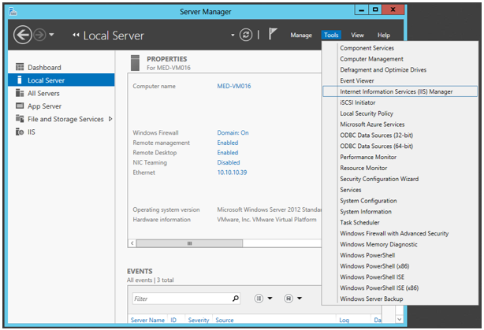
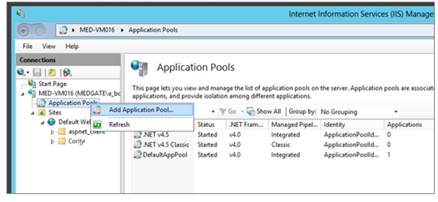
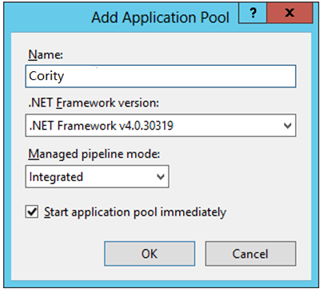
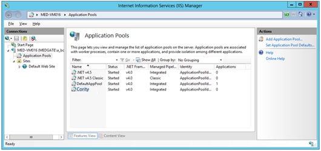
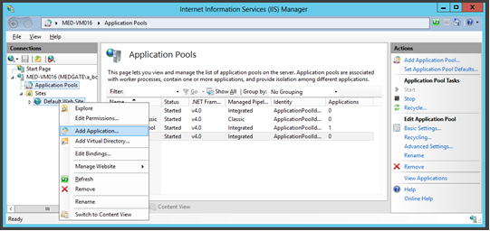
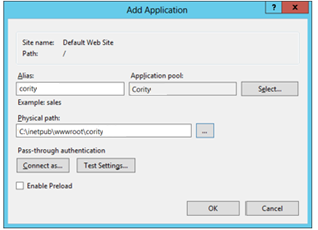

Copy the Cority folder, located in the installation package (under \Web folder) to the X:\inetpub\wwwroot\ folder.

Start IIS Manager.

In IIS Manager, create a new application pool.

Specify a name for the pool such as “Cority”, and ensure that the .NET Framework version is 4.0.30319 and managed pipeline mode is set to “Integrated”. When you are finished, click OK.

The new pool will appear in the list of pools.

Create a new application for Cority.

Choose an alias for the application (“cority” is suggested), select the application pool created in the previous step and the path where the files were copied, and then click OK.

The application alias must be in lower case.
The application will now appear in the IIS Manager.